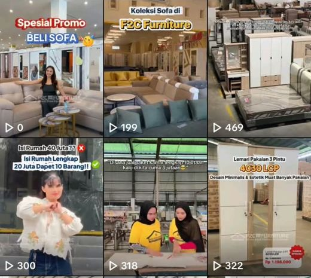
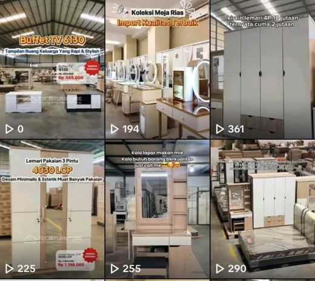
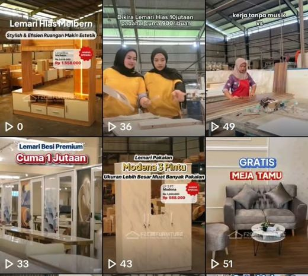
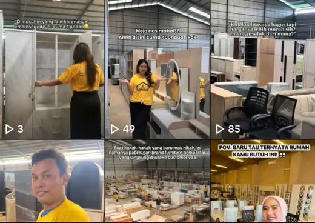
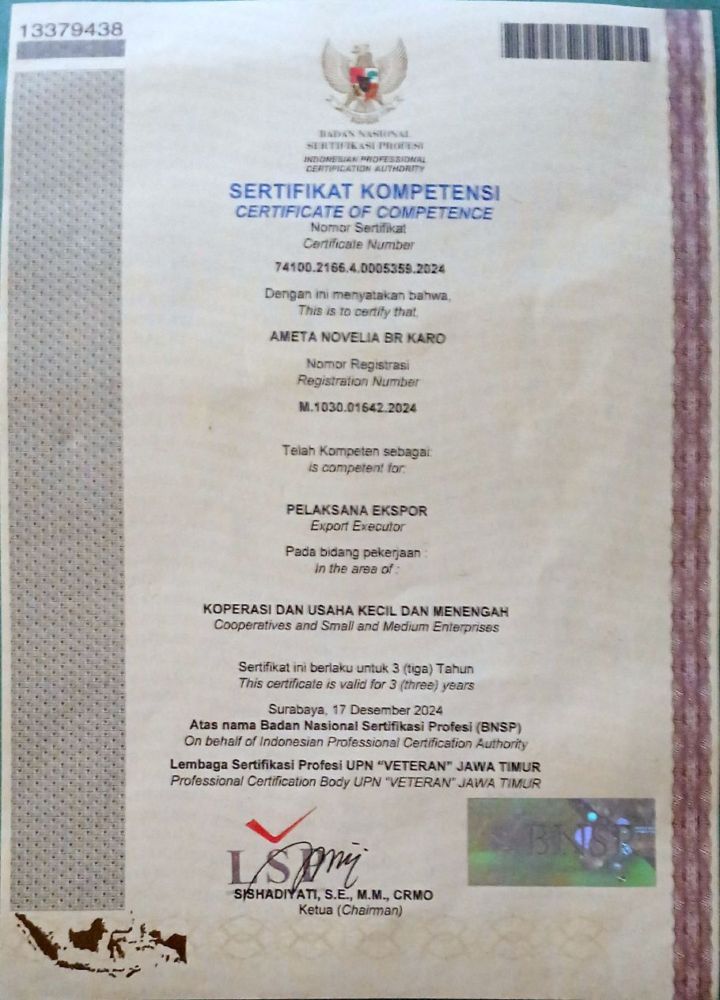
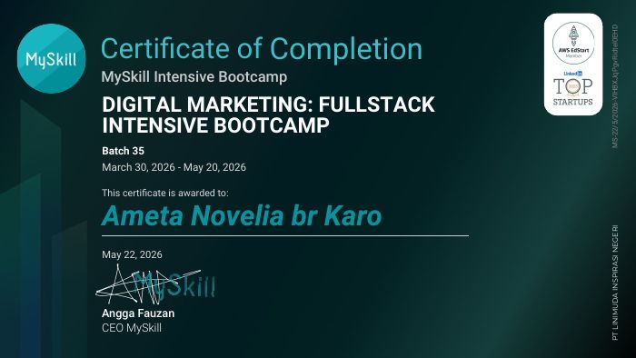

Ameta Novelia br Karo
Saya mengubah anggaran iklan menjadi percakapan dengan pembeli, dan membantu produk lokal menjangkau pasar yang lebih luas.
I turn ad budgets into conversations with buyers, and help local products reach wider markets.
Meta Ads Specialist di F2C Furniture. Bersertifikat BNSP sebagai Pelaksana Ekspor. Sarjana Hubungan Internasional (IPK 3,84) dengan pengalaman konten media sosial, riset, dan komunikasi lintas budaya.
Meta Ads Specialist at F2C Furniture. BNSP-certified Export Executor. International Relations graduate (GPA 3.84) with experience in social media content, research, and cross-cultural communication.
Sumber: Meta Ads Manager, F2C Furniture, 8 kampanye aktifSource: Meta Ads Manager, F2C Furniture, 8 active campaigns
F2C Furniture: iklan Meta yang berakhir di chat penjualan
F2C Furniture: Meta ads that end in a sales chat
F2C Furniture menjual furnitur langsung dari pabrik lewat 14 cabang di Bali, Kalimantan, dan Sulawesi. Pembeli memesan lewat chat, jadi ukuran keberhasilan kampanye adalah percakapan yang dimulai, bukan sekadar klik.
F2C Furniture sells factory-direct furniture through 14 branches across Bali, Kalimantan, and Sulawesi. Customers order by chat, so campaigns are measured on conversations started, not just clicks.
Yang saya kerjakan
What I did
- Memecah kampanye per kota dan wilayah agar anggaran, audiens, dan materi iklan bisa disesuaikan dengan pasar lokal tiap cabang.
- Melakukan A/B testing pada creative, copy, dan penempatan iklan.
- Memantau biaya per percakapan, CTR, CPC, dan CPM di Meta Ads Manager untuk mengatur alokasi anggaran.
- Split campaigns by city and region so budget, audience, and creative fit each branch's local market.
- Ran A/B tests on creative, copy, and ad placements.
- Tracked cost per conversation, CTR, CPC, and CPM in Meta Ads Manager to steer budget allocation.
- Bekerja dengan tim kreatif menyusun visual dan copywriting yang menonjolkan harga langsung dari pabrik.
- Menyusun laporan performa berkala beserta rekomendasi untuk kampanye berikutnya.
- Worked with the creative team on visuals and copy built around factory-direct pricing.
- Produced regular performance reports with recommendations for the next round of campaigns.
Biaya per percakapan, per wilayah (indeks)
Cost per conversation, by region (index)
Diurutkan dari yang paling efisien Sorted from most efficient| Wilayah | Region | Porsi anggaran | Share of spend | Kontak pesan | Msg. contacts | CTR | Indeks biaya per percakapan (rata-rata = 100) | Cost per conversation index (average = 100) |
|---|---|---|---|---|---|---|---|---|
| Sulawesi Selatan | 23,6% | 6.129 | 0,74% | |||||
| Banjarmasin | 15,7% | 2.780 | 0,94% | |||||
| Sulawesi Utara | 17,7% | 3.290 | 1,42% | |||||
| Bitung | 1,3% | 278 | 1,36% | |||||
| Bali / Singaraja | 13,6% | 2.296 | 0,87% | |||||
| Palangkaraya | 3,0% | 264 | 0,92% | |||||
| Samarinda | 12,6% | 1.503 | 0,89% | |||||
| Balikpapan | 12,6% | 1.294 | 0,95% | |||||
050100 |
Sulawesi Selatan menyerap anggaran terbesar dan tetap menjadi yang paling efisien: 6.129 kontak pesan dengan biaya per percakapan 21% di bawah rata-rata akun.
South Sulawesi took the largest budget and stayed the most efficient: 6,129 messaging contacts at a cost per conversation 21% below the account average.
Kampanye Sulawesi Utara (1,42%) dan Bitung (1,36%) mencatat CTR tertinggi di akun, sekitar 1,5 kali rata-rata 0,94%. Kombinasi materi dan audiens di dua kampanye ini paling berhasil memancing klik.
North Sulawesi (1.42%) and Bitung (1.36%) posted the highest CTR in the account, about 1.5× the 0.94% average. Their creative-and-audience pairing drew the most clicks.
Biaya per percakapan tertinggi, 34% di atas rata-rata akun, dengan anggaran setara Samarinda. Prioritas uji ulang audiens dan creative, atau geser anggaran ke wilayah yang lebih efisien.
Highest cost per conversation, 34% above the account average, on a budget similar to Samarinda. First in line for audience and creative re-tests, or budget shifts toward more efficient regions.
Konten TikTok untuk 8 akun cabang
TikTok content for 8 branch accounts
Setiap cabang F2C punya akun TikTok sendiri, dari Bali sampai Kotamobagu. Kontennya dibangun di atas satu pesan yang sama dengan iklan Meta: furnitur berkualitas, harga langsung dari pabrik, pesan lewat WhatsApp.
Each F2C branch runs its own TikTok account, from Bali to Kotamobagu. The content carries the same message as the Meta ads: quality furniture, factory-direct prices, order via WhatsApp.
Hook kejutan harga
Price-surprise hook
Membuka dengan tebakan harga mahal, lalu membalik dengan harga asli. Video teratas di akun Makassar memakai format ini.
Opens with an expensive guess, then flips to the real price. The top video on the Makassar account uses this format.
"Kirain lemari 4P 10 jutaan, ternyata cuma 2 jutaan"
"Thought this 4-door wardrobe was 10 million, it's only 2 million"
Etalase produk + label harga
Product showcase + price tag
Satu produk per video, dengan nama seri dan stiker "Harga Spesial" agar penonton langsung tahu harga sebelum chat.
One product per video, with the model name and a "Special Price" sticker so viewers see the price before they message.
Di balik pabrik
Behind the factory
Proses produksi dan suasana gudang sebagai bukti klaim "langsung dari pabrik".
Production and warehouse footage as proof of the "direct from the factory" claim.
POV & situasi relatable
POV & relatable moments
Menyasar momen hidup yang memicu pembelian, seperti pasangan yang baru mau menikah dan mengisi rumah pertama.
Targets life moments that trigger purchases, such as newlyweds furnishing their first home.




Jejak Pemuda: media sosial untuk gerakan anak muda
Jejak Pemuda: social media for a youth movement
Magang Digital Marketing, Januari – Mei 2025, di LSM yang berfokus pada pemuda.
Digital Marketing Intern, January – May 2025, at a youth-focused NGO.
- Menyusun dan mengelola kalender konten media sosial.
- Membuat grafis di Canva dan menulis caption untuk kampanye digital, lalu menjadwalkannya di jam dengan keterlibatan audiens tertinggi.
- Memantau analitik untuk mengevaluasi kampanye dan mengusulkan penyesuaian berbasis data.
- Bekerja dengan tim program untuk meningkatkan visibilitas inisiatif komunitas.
- Planned and managed the social media content calendar.
- Designed graphics in Canva and wrote captions for digital campaigns, scheduled for peak audience engagement.
- Monitored analytics to evaluate campaigns and proposed data-driven adjustments.
- Worked with the program team to raise the visibility of community initiatives.
Digital marketing yang paham ekspor
Digital marketing with export know-how
Saya bersertifikat kompetensi BNSP sebagai Pelaksana Ekspor di bidang Koperasi dan UMKM. Ditambah latar belakang Hubungan Internasional, saya bisa membantu brand lokal menyiapkan pemasaran untuk pembeli di luar negeri.
I hold a BNSP competency certificate as an Export Executor for Cooperatives and SMEs. Combined with my International Relations background, I can help local brands prepare their marketing for overseas buyers.

Yang bisa saya bantu
How I can help
- Riset pasar negara tujuan: membaca kebijakan, budaya, dan perilaku konsumen dengan bekal studi HI.
- Kesiapan dokumen & proses ekspor sesuai standar kompetensi Pelaksana Ekspor.
- Iklan & konten lintas negara: targeting Meta Ads per negara dan copywriting dua bahasa (TOEFL ITP 550).
- Kehadiran digital siap ekspor untuk UMKM yang ingin dipercaya calon buyer luar negeri.
- Target-market research: reading policy, culture, and consumer behaviour, grounded in IR training.
- Export documents & process readiness to the Export Executor competency standard.
- Cross-border ads & content: country-level Meta Ads targeting and bilingual copywriting (TOEFL ITP 550).
- An export-ready digital presence for SMEs that need to earn the trust of overseas buyers.
No. 74100.2166.4.0005358.2024 · LSP UPN "Veteran" Jawa Timur · berlaku 17 Des 2024 – Des 2027valid 17 Dec 2024 – Dec 2027
Pelatihan & sertifikasi
Training & certifications

Digital Marketing: Fullstack Intensive Bootcamp
Batch 35. Kurikulum penuh dari strategi brand hingga analitik iklan berbayar.
Batch 35. A full curriculum from brand strategy to paid-ads analytics.
Pelaksana Ekspor
Export Executor
Sertifikat kompetensi nasional, bidang Koperasi dan Usaha Kecil & Menengah.
National competency certificate, Cooperatives and Small & Medium Enterprises.
Digital Marketing
Program pelatihan digital marketing.
Digital marketing training program.
TOEFL ITP 550
Bahasa Inggris untuk komunikasi kerja, copywriting, dan riset.
Working English for communication, copywriting, and research.
Pengalaman, pendidikan & riset
Experience, education & research
Meta Ads Specialist · F2C Furniture
Perencanaan, eksekusi, dan optimasi kampanye Facebook & Instagram untuk brand furnitur dengan 14 cabang.
Planning, running, and optimizing Facebook & Instagram campaigns for a furniture brand with 14 branches.
Digital Marketing Intern · Jejak Pemuda
Kalender konten, desain grafis, caption, dan analitik kampanye.
Content calendar, graphic design, captions, and campaign analytics.
Magang Divisi HAM · Kemenkumham Kanwil Jawa Timur
Human Rights Division Intern · Ministry of Law & Human Rights, East Java
Riset perjanjian internasional dan legislasi, penyusunan laporan, dukungan lokakarya.
Research on international treaties and legislation, report writing, workshop support.
Lyrics Curator · Musixmatch
Kurasi konten multibahasa dan metadata dengan standar akurasi tinggi.
Curated multilingual content and metadata to strict accuracy standards.
S1 Hubungan Internasional · UPN "Veteran" Jawa Timur
B.Soc.Sc. International Relations · UPN "Veteran" East Java
IPK 3,84. Fokus diplomasi global, ekonomi politik, dan resolusi konflik.
GPA 3.84. Focus on global diplomacy, political economy, and conflict resolution.
The Boomerang Mechanism in Human Rights Advocacy: Baloch Long March Against China · Pena Wimaya Journal, 2025
From Local Struggle to Global Cause: Framing Strategies in the Baloch Long March Movement · Spektrum Journal, 2025
Navigating Cultural Diversity: Bridging Societal Gaps Through International Cooperation · Universitas Sebelas Maret, 2024
Presenter di 4th International Conference on Humanities and Social Science (ICHSS), UNS, 2024.
Presenter at the 4th International Conference on Humanities and Social Science (ICHSS), UNS, 2024.
Alat & keahlian
Tools & skills
Iklan berbayar
Paid media
- Meta Ads Manager
- Kampanye click-to-message
- A/B testing creative & copy
- Optimasi anggaran per wilayah
- Meta Ads Manager
- Click-to-message campaigns
- Creative & copy A/B testing
- Regional budget optimization
Konten & sosial
Content & social
- Kalender konten
- Copywriting ID / EN
- Desain grafis di Canva
- Konsep video pendek TikTok
- Content calendars
- ID / EN copywriting
- Graphic design in Canva
- Short-form TikTok concepts
Analisis & komunikasi
Analysis & communication
- Pelaporan performa iklan
- Riset pasar & kebijakan
- Presentasi publik
- Koordinasi pemangku kepentingan
- Ad performance reporting
- Market & policy research
- Public speaking
- Stakeholder coordination
Butuh iklan yang menghasilkan chat, atau brand yang siap ke luar negeri?
Need ads that bring in chats, or a brand ready to go abroad?
Medan, Indonesia